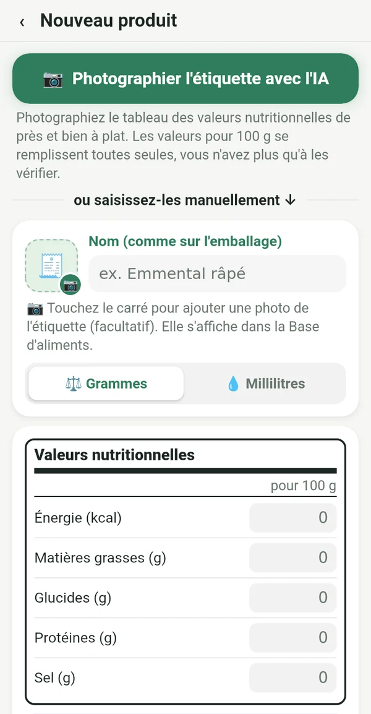
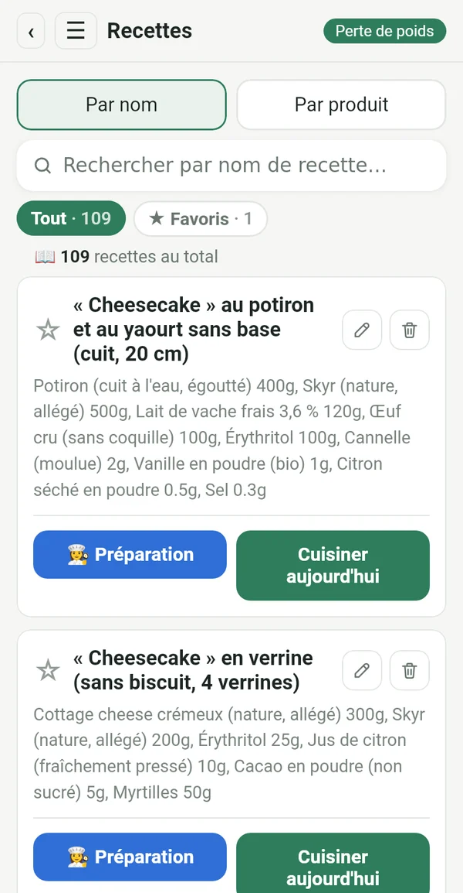
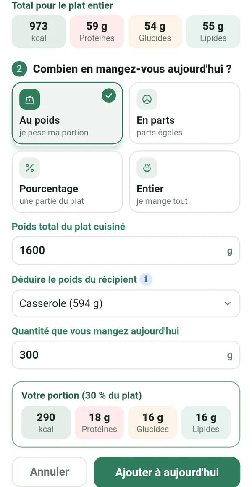
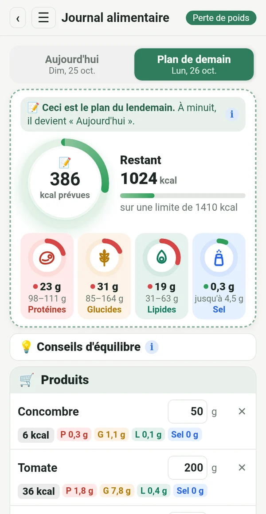
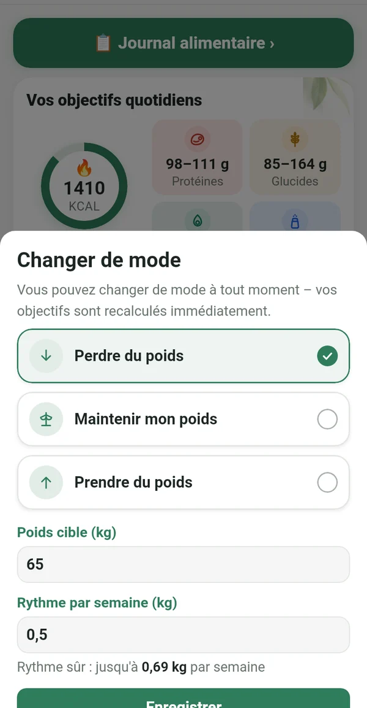
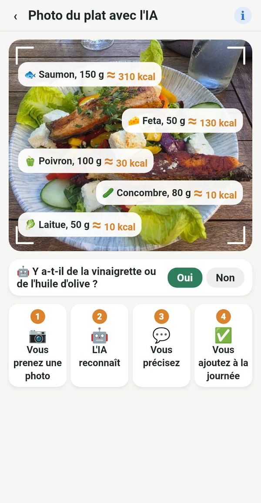

Tout ce qu'il vous faut, sans superflu

Exact, de l'étiquette, pas d'une base étrangère
Recopiez les valeurs pour 100 g de l'emballage ou prenez simplement l'étiquette en photo. Les chiffres correspondent à ce que vous mangez vraiment.
📷 Une photo de l'étiquette avec l'IA remplit les champs pour vous
Votre livre de cuisine numérique
Les recettes du carnet de mamie, des livres de cuisine sur l'étagère et de vos groupes préférés, réunies au même endroit. Saisies une fois, utilisées pour toujours.

Votre portion exacte de toute la casserole
Pesez le plat terminé avec la casserole. Macrolia déduit la casserole et calcule exactement ce que vous avez mangé.

Planifier, faire les courses, manger
Dès aujourd'hui, notez ce que vous mangerez demain. Achetez seulement le nécessaire, et à minuit le plan devient votre journée.

Perdre, maintenir ou prendre du poids
Une fois l'objectif atteint, passez à « Maintenir mon poids ». Si la vie change, changez simplement de mode. Votre limite quotidienne suit l'équation de Mifflin-St Jeor et les recommandations cliniques, à un rythme sûr.

Savoir ce que vous mangez, même dehors
Prenez l'assiette en photo et l'IA reconnaît ce qu'elle contient. La valeur est approximative et marquée d'un ≈. Mieux vaut approximatif que rien.
Calories de l'activité
Via Health Connect, depuis le téléphone, une montre ou une app de fitness. Vous choisissez combien s'ajoute à votre limite.
Poids, graphique, rapport
Courbe de poids, photos avant-après rien que pour vous et rapport en PDF et Excel.
Conseils d'équilibre
De courts conseils quand les protéines ou les lipides sortent de l'objectif. Ça aide, sans donner d'ordres.
Pour toutes celles qui veulent garder le cap
Le yoyo ne vient pas du régime. Il vient quand tu arrêtes.
Après bébé, tu reprends ton rythme.
L'âge n'est pas une raison d'abandonner.
Même au restaurant, tu sais quoi commander.
Qui suit le plan exactement obtient un résultat exact.
Vos données sont à vous
Tout reste sur votre téléphone. Pas d'inscription, pas de publicité ni de suivi. La photo pour l'analyse IA est envoyée uniquement pour le calcul et n'est pas conservée.
Abonnement
Abonnement mensuel ou annuel, tous deux avec 7 jours gratuits. Résiliable à tout moment dans Google Play.
En 14 langues, avec un thème clair et un thème sombre.
Questions
Quand l'app sortira-t-elle ?
Nous préparons le lancement sur Google Play. Écrivez-nous et nous vous préviendrons dès qu'elle sera prête.
Existe-t-il une version iPhone ?
Pour l'instant, uniquement sur Android. Une version iPhone est prévue plus tard.
Pourquoi n'y a-t-il pas de lecteur de code-barres ?
Les bases de codes-barres sont remplies par les utilisateurs et souvent fausses ou périmées. Dans Macrolia, chaque valeur vient de l'étiquette, donc les chiffres sont exacts.
Combien de photos IA puis-je prendre ?
Jusqu'à 100 photos par mois, étiquettes et plats confondus.